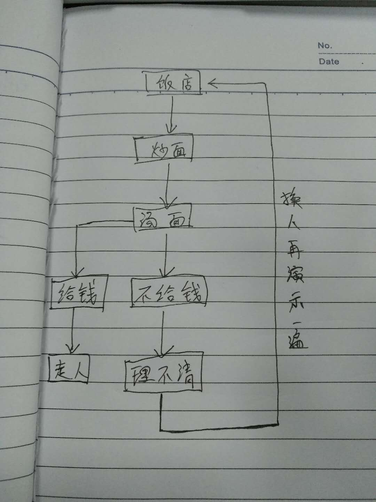
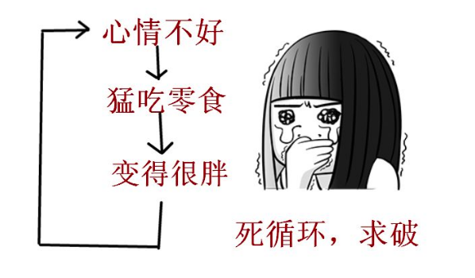

第一节：精讲
1.循环的概念和意义
循环语句

宋小宝吃面小品
循环的意义：
计算机是个傻子，没有七情六欲，不会有人类的感性和思考。当你问他爱吃啥，他不知道，当问他喜欢什么颜色，也不知道。那我们要计算机干啥呢？
从远古时期讲，所谓计算机并没有现在这个牛的功能，游戏电影，都是不可能的。只能干一件事：计算。那么什么是计算呢，为什么不自己计算呢？
所谓计算，就是数据的累加，比如1+100，这些累加都是重复性的工作，当人处理这些重复性的工作时，速度有限，但是计算机处理起来奇快无比，这就是计算机的价值所在。
发展到今天也是一样，当我们需要计算机的时候，大多数让他干的都是重复性的工作，这些重复性的工作有着极其相似的代码
比如，打印10次“hello world”；
document.write("hello world");
document.write("hello world");
document.write("hello world”);
…………
对于我们来说这样费时费力，同时也会有很多的代码冗余，那么这个时候我们应该使用的就是js中的循环。
当然我们也可以不用循环，但是我们要是打印100次hello world呢？
2.while循环和do-while循环的使用
while(条件){
执行语句
}
当条件为true时，会一直重复执行花括号内的执行语句。注意：千万不要造成死循环
var i = 0; //计数器
while(i<10){ //停止的条件
document.write("hello world”);
i++; //改变计数器
}
注意：为避免死循环，一定要在循环体内改变条件中使用的变量的值
do-while
do{
当条件为真，执行这里的语句
}while(条件){
当条件为假，执行这里的语句
}
当条件为真时，执行do的语句，当条件为假时，执行while的语句
do{
console.log("do的执行语句”);
i++;
}while(i<10){
console.log("while的执行语句");
}
注意do-while的改变计数器需要写在do语句中，否则会造成死循环。
while和do-while的区别？
do-while无论结果为真还是为假，都会执行一次
4.continue关键字 和 break关键字的使用
continue和break都是用来控制循环结构的，主要是用来停止循环。
continue表示终止本次循环，还执行后面的循环。也可以理解成跳过本次循环中剩下的语句，执行下一次循环。
break表示完全结束一个循环，跳出循环体执行循环后面的语句。
6.入职薪水10K，每年涨幅5%，50年后工资多少
7.打印100以内7的倍数
8.打印100以内的奇数
9.打印1～100所有数字的和
第二节：应用
1.打印100以内所有偶数的和
2.提升：求出1-1/2+1/3-1/4…..1/100的和 var i=1;
拓展：篮球从5米高的地方掉下来，每次弹起的高度是原来的30%，经过几次弹起，篮球的高度小于0.1米。（必须用到关键字break）
3.打印出1000-2000年中所有的闰年，并以每行四个数的形式输出
4.尝试打印三角形
＊
＊＊
＊＊＊
＊＊＊＊
＊＊＊＊＊
第三节：精讲
1.for循环的使用
for(语句1;语句2;语句3){
需要执行的代码块
}
语句1:在循环体开始前执行－－－－计数器
语句2:循环的条件－－－－－－－－停止的条件
语句3:在循环体被执行后执行－－－改变计数器
for(var i = 0; i < 10; i++){
console.log(1);
}
注意在for循环中语句之间用“;”隔开。
小技巧：在知道执行次数时用for，在条件循环(无法判断循环次数)时用while
2.for循环的嵌套
for循环嵌套时，注意各个循环的计数器变量名不能重复，否则会变成死循环
打印九九乘法表:
如何使用：需要打印的内容多行多列的时候，需要做多重运算的时候
3.死循环的概念和作用

无法靠自身控制结束的循环，称为死循环
但是可以利用死循环的原理，解决一些问题：
案例：篮球从5米高的地方掉下来，每次弹起的高度是原来的30%，经过几次弹起，篮球的高度是0.1米。
不知道要循环几次的问题，利用死循环，每次判断一个条件，直到满足条件，利用break跳出循环
4.Firefox和Chrome和IE浏览器的 Debug工具使用
如何打 断点
断点：可以让我们看到程序一行一行的执行效果
1.在浏览器的控制台单击行号打断点
2.在代码中，需要断点的位置，添加关键字debugger
conosle.log
5.打印100–200之间所有能被3或者7整除的数
6.计算20的阶乘
7.求100-999之间的水仙花数。abc = +
+ +
+
+第四节：应用
1.求1+2!+3!+...+20!的值
2.完成一个三角形打印功能
3.完成一个梯形打印功能
aaaaaa***
aaaaa*****
aaaa*******
aaa*********
aa***********
a*************
***************
第五节：综合应用
1.篮球从5米高的地方掉下来，每次弹起的高度是原来的30%，经过几次弹起，篮球的高度小于0.1米。
2.有一个棋盘，有64个方格，在第一个方格里面放1粒芝麻重量是0.00001kg，第二个里面放2粒，第三个里面放4，棋盘上放的所有芝麻的重量
3.有100元，逛超市，洗发水15元一瓶，牙膏5元一管，牙刷2元一个，有多少种买法，可以正好把钱花完
4.求100以内的素数
拓展：公鸡5元一只，母鸡三元一只，小鸡一元两只。一百元买一百只鸡，问如何购买？公鸡几只，母鸡几只，小鸡几只？